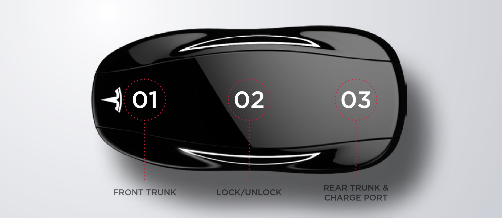
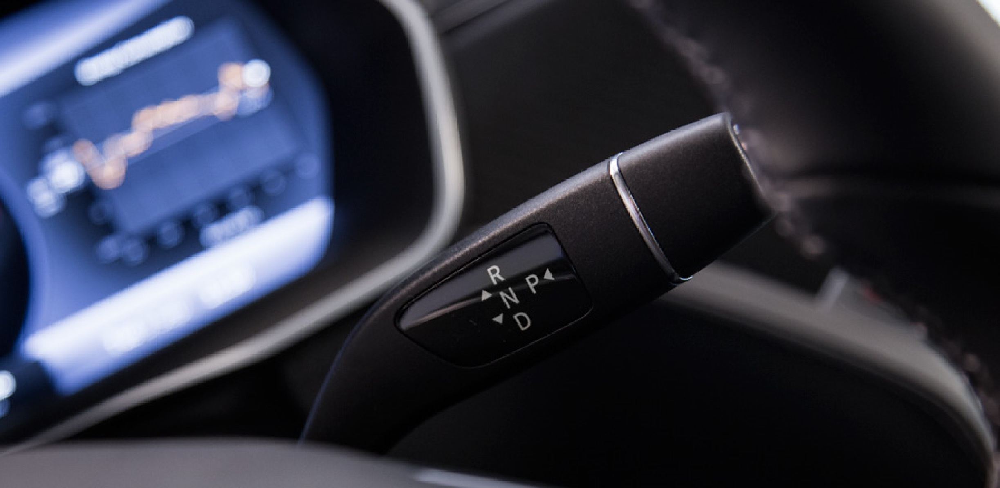
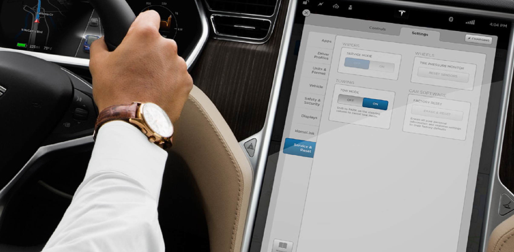
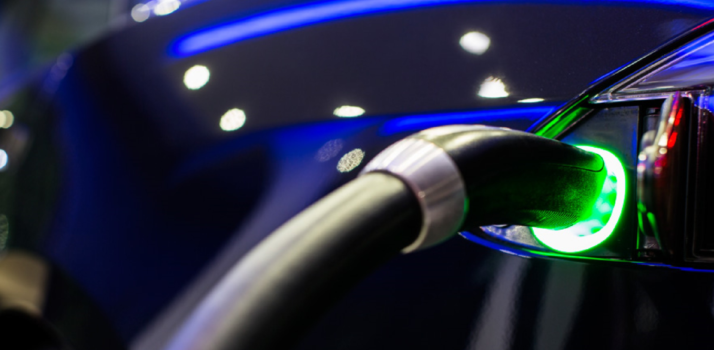
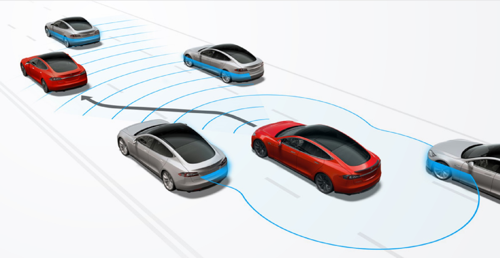
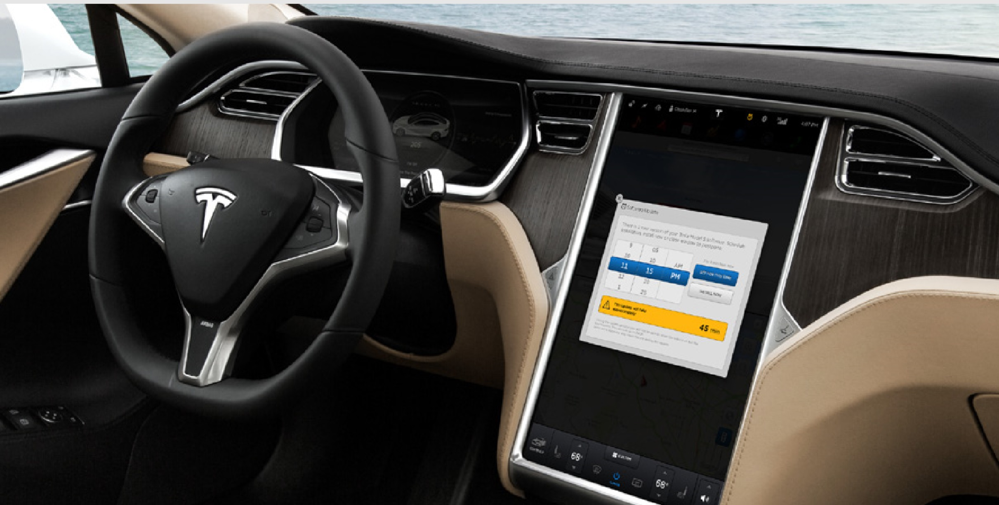
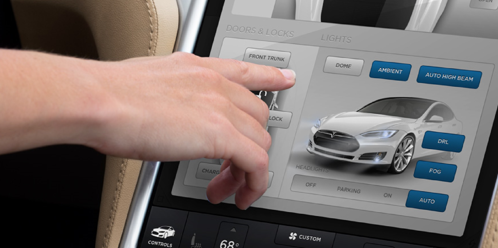
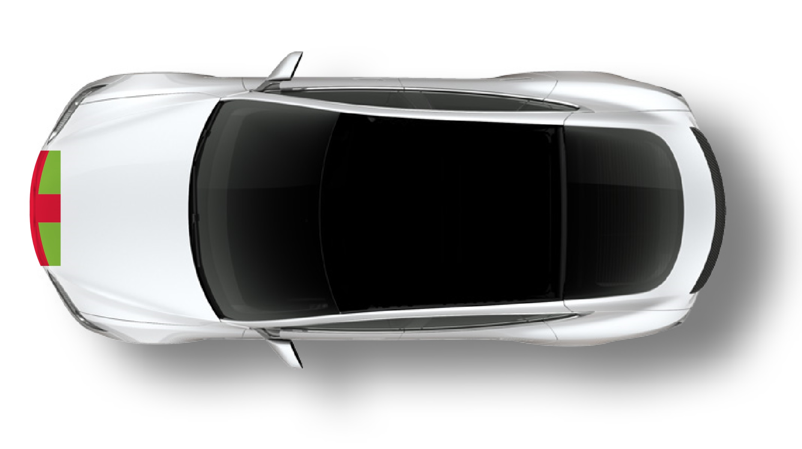
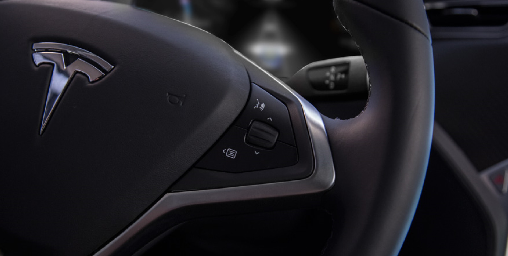
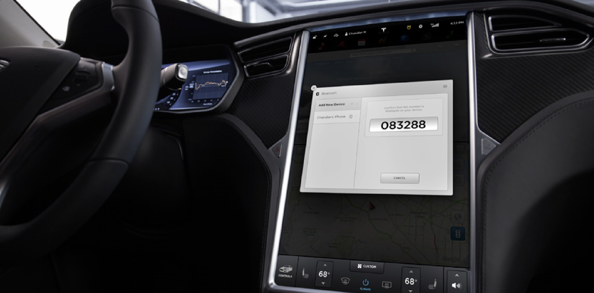

Important contacts
To help you get started, this document contains some quick facts about your vehicle’s main features. For more information please visit www.tesla.com. For general questions, you can find your nearest Tesla Store or Service Center at www.tesla.com/findus.
Opening doors
If you have the key of your Model S with you, the door handles will automatically extend as you approach the vehicle. If the handles don’t extend, touch them lightly. Open the trunk without using the key simply by touching the switch located under the liftgate handle.
Using the key
To familiarize yourself with the key, think of it as a miniature version of Model S, with the Tesla “T” representing the front of the vehicle.
- Front trunk
- Lock/Unlock all
- Rear trunk & charge port
Double click to unlock
Double-click to unlock doors (lights flash twice and handles extend). Single-click to lock doors & trunks (lights flash once and handles retract).
Double-click to unlock or to open/close a powered liftgate. Single-click to stop/start the movement of a powered liftgate. Press and hold the trunk button to open your charge port.
Start, drive, park and power off
When parked, the center of the instrument panel displays range and shows whether any doors are open. Pressing the brake starts Model S.
Select a gear
With the brake pedal firmly depressed, move the gear selector all the way down for D (Drive), all the way up for R (Reverse), and a half push in either direction for N (Neutral). When you finish driving, shift into P (Park) by pressing the button on the end of the gear selector. If CREEP is OFF, Model S does not roll when shifted into D or R the way conventional vehicles do. Note that Model S senses your weight in the driver’s seat. If you lift off the seat, it may shift into P (Park).
Power off
Shift into P (Park) by pressing the button on the end of the gear selector. The parking brake automatically engages and all systems keep operating. When you leave Model S, it powers off automatically, turning off the touchscreen and instrument panel.
Leaving model S in neutral
To keep Model S in Neutral so it can roll freely (for example, at a car wash, or when pulling the vehicle onto a transporter, etc.) you must activate TOW MODE.
Activate tow mode
- Make sure your Model S is parked in a safe location (TOW MODE will allow Model S to free roll).
- Shift into Park (P).
- Press and hold the brake pedal.
- Touch CONTROLS > SETTINGS > SERVICE & RESET > TOW MODE > ON.
- TOW MODE ENABLED will be displayed on the instrument cluster. The vehicle is now free rolling.
Deactivate tow mode
- Press and hold the brake pedal.
- Press the Park (P) button on the end of the gear stalk.
- A notification will appear on the touchscreen.
- Press and hold the red button on the touchscreen for at least 3 seconds, and TOW MODE will be disabled.
Charging model S
Open the charge port by using the touchscreen, pressing and holding the trunk button on the key, or using the button on the handle of the Mobile Connector. First, plug the connector into your power source, and then into Model S. Use pressure when plugging into the Model S to ensure full connection is made with your power source. To disconnect the Mobile Connector, press the button on the handle, the charge port light will turn white and you may proceed to pull the handle from the charge port.
- The charge port will glow blue when first plugged in and will transition to green when Model S is charging
- The light will pulse according to the vehicle’s state of charge (faster = lower state of charge; solid green = fully charged).
- If the charge port glows yellow, make sure the cable is fully plugged into Model S.
- If the charge port glows red, make sure your cable is fully connected, and check your power source.
- If the vehicle is locked while charging, the charge port light will turn off and the handle will lock into the charge port. To disconnect the handle, you must unlock your car.
Range and efficiency
You can maximize your driving range with the same driving habits that you use to conserve fuel in a gasoline-powered vehicle. Energy consumption also depends on environmental conditions, such as cold weather and hilly roads. To extract the maximum mileage from a charge:
- Avoid frequent and rapid acceleration.
- Use regenerative braking to slow down by taking your foot off the accelerator instead of using the brake.
- Limit the use of resources such as heating and air conditioning. Using seat heaters to keep warm is more efficient than cabin heating.
- Pre-condition your Model S while it is plugged in. When plugged in with the climate control system activated, you can use the mobile app to remotely cool or heat the cabin. The vehicle will pull power from the wall, ensuring that you have optimal range when you’re ready to drive.
- Use Range Mode to automatically limit the amount of power used for the climate control system: CONTROLS > DRIVING > RANGE MODE > ON
Autopilot
On vehicles configured with the Autopilot Convenience Features, you can activate Autopilot features to help relieve you from the most tedious and potentially dangerous aspects of road travel. We combine a forward camera and radar, long-range sonar sensors, and an electric assist braking system to automatically drive your Model S on the open road and in dense stop-and-go traffic.
Autosteer & Autolane change
When Autopilot is available, the steering wheel icon located next to the speed display in the instrument cluster will appear grey. Pull the cruise control lever once to engage the Traffic-Aware Cruise Control and pull it twice to activate Autosteer. The steering wheel icon will now turn blue. Autosteer keeps the vehicle in the current lane and maintains the vehicle’s speed. However, you must still keep your hands on the steering wheel so you are prepared to take control of the vehicle at any moment during changing road conditions. When Autosteer is activated, you can change lanes by engaging the turn signal, and your Model S will move itself to the adjacent lane when it’s safe to do so.
Autopark
When traveling below 15mph, a grey P will appear on the instrument cluster when your Model S detects a parking spot next to you. Put the vehicle into reverse and “Autopark Ready” will appear on the touchscreen. Once activated, your Model S will begin to park itself by controlling steering and vehicle speed.
Software updates
Certain features are progressively enabled over time with software updates. Your Model S will notify you when a software update is available and request that you select a time for the update to download over the air. Along with a message, you will see a yellow clock icon appear in the status bar on the touchscreen. Touching this icon will provide you with instructions for scheduling a time to download the update. Please note that Model S cannot be driven while a software update is installing. We suggest scheduling the software installation overnight or during a period of time when the vehicle will not be in use. The average software update takes about one hour to complete but may take longer depending on the size of the software update. Connect your Model S to your home’s Wi-Fi network for the fastest possible download time.
Controls: doors, light & more
Touch Controls on the bottom left corner of the touchscreen to control most Model S features. Settings that are currently active are highlighted in blue.
Front trunk
To open the front trunk, use the key or the touchscreen. To close the front trunk, lower the hood to rest on the latches before applying pressure. Use both hands and apply pressure only to the green areas illustrated. Applying pressure in the red areas can cause damage. Refrain from slamming the hood shut.
Voice commands
- Press and hold the voice command button for the entire duration of your command.
- Wait for the tone before speaking your command.
- Speak clearly and slowly.
- Release the button when you are done speaking.
- Voice commands can be used with the Media, Phone, and Navigation apps.
Useful commands
- “Navigate to...”
- “Drive to...”
- “Where is...”
- “Call (Name)...”
- “Listen to...”
Bluetooth devices
To pair your mobile device with model S
- Enable Bluetooth and set your device to discoverable or visible (this is especially important for Android devices).
- You may see “Model S” displayed on your device’s bluetooth screen. Do not select Model S from the device’s screen.
- Touch the Bluetooth icon on the top right of the vehicle touchscreen.
- Touch “Add New Device” on the vehicle touchscreen and select “Search”.
- Once found, your device’s name will appear on the vehicle’s touchscreen.
- Select your device on the vehicle touchscreen.
- Wait for the pairing code to appear on the vehicle touchscreen.
- Check that the same number is displayed on both the vehicle touchscreen and your device.
- Your device will ask you to confirm pairing with Model S.
- Once you’ve agreed, your device and Model S will be connected.